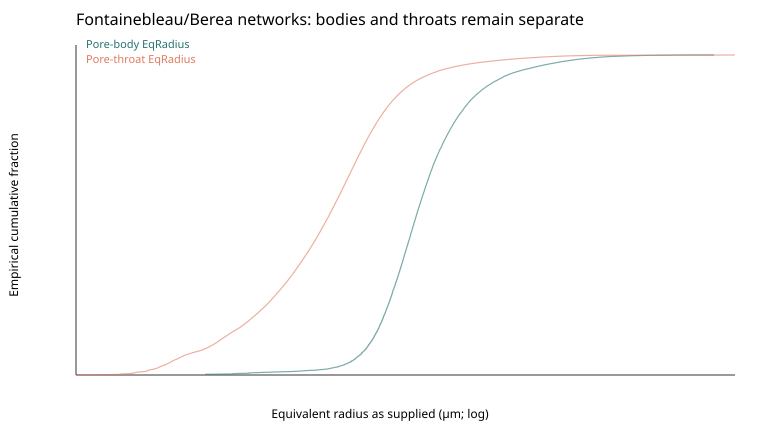
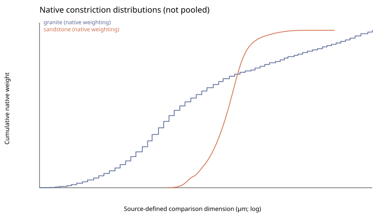
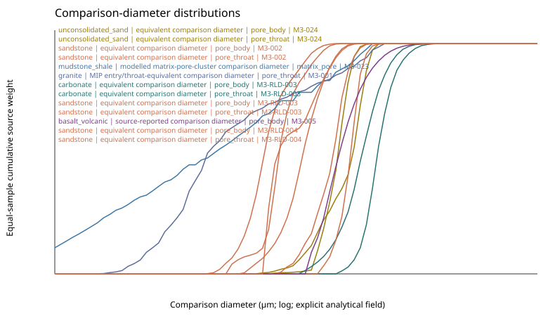
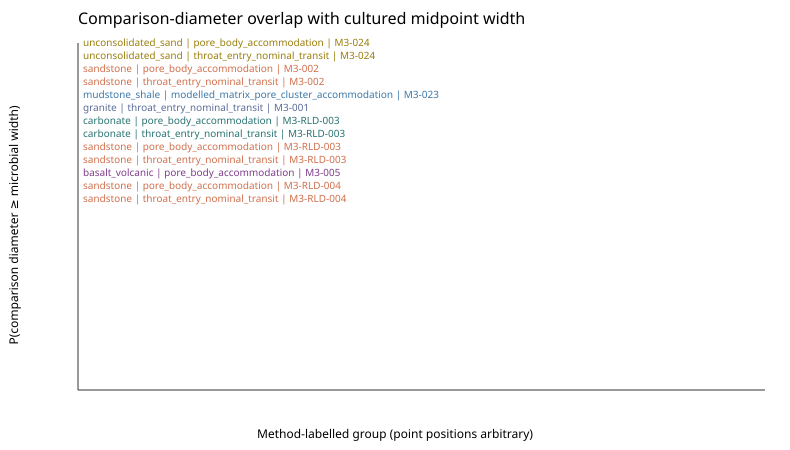
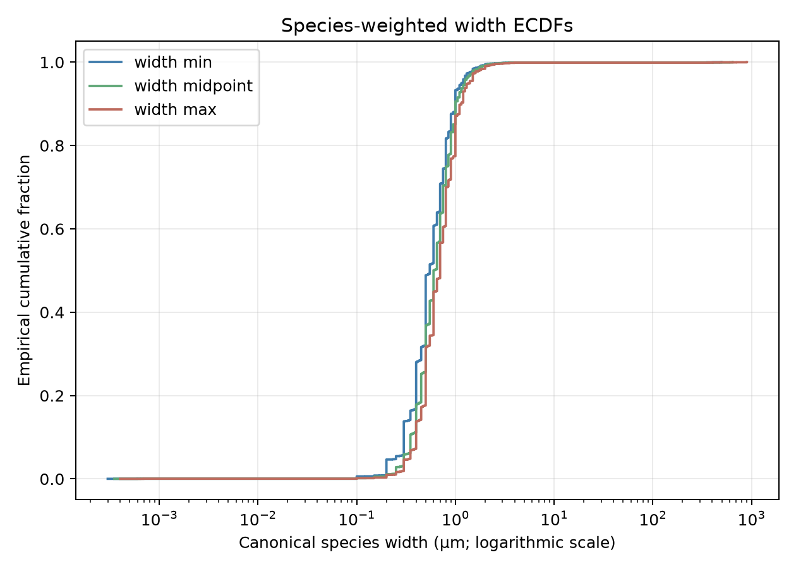
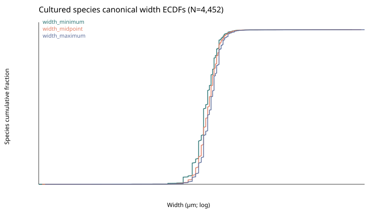
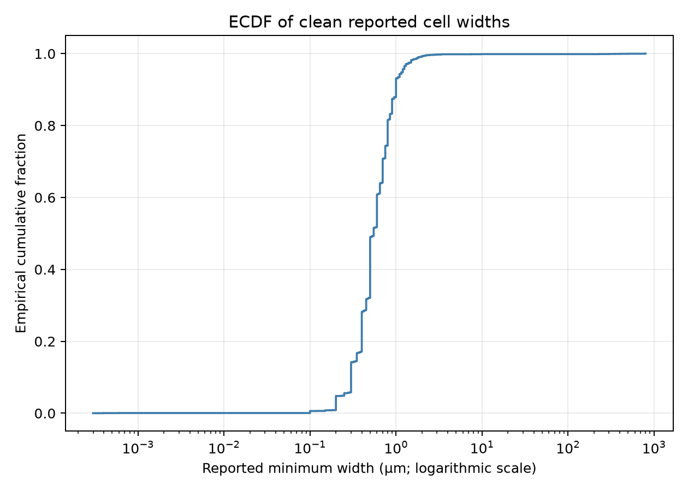
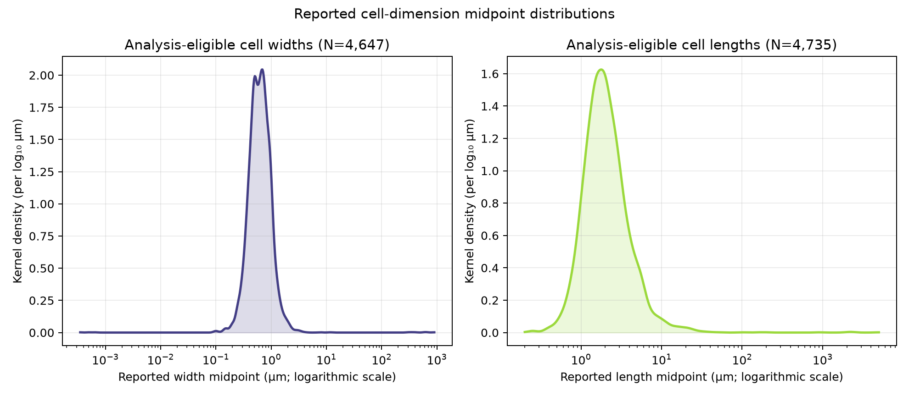

Scope
Overview
How much subsurface physical space is geometrically accessible to microbial life, given microbial cell geometry and geological pore and fracture geometry?
Total porosity alone is not a biological descriptor. A material can contain substantial void volume that is too small or poorly connected for cells, while a crystalline rock with little matrix porosity can host life in connected fractures, fracture fluids, and on fracture surfaces. The framework therefore distinguishes habitable space, geometrically accessible space, and connected space: related concepts that are not interchangeable.
Milestone 1 provides the first empirical axis: a cultured, formally described microbial geometry baseline with explicit quality control. Geological distributions and their coupling to microbial geometry have not yet been compiled, so physical accessibility cannot yet be quantified.
Scientific progression
Project roadmap
The roadmap describes scientific deliverables, not a schedule, Git history, or completion estimate.
M1
Cultured microbial geometry baseline
The empirical resource and Scientific QC v1 are complete. Morphology-specific transit eligibility, unresolved complex morphology contexts, and additional sensitivity analyses may refine the baseline without invalidating the current version.
Status: v1 complete
M2
Environmental and subsurface microbial geometry
Direct-observation dataset providing an in situ counterpart to the cultured baseline.
Status: Planned
M3
Matrix pore geometry
A source census and method-aware data model are complete; controlled ingestion of selected matrix-pore, throat, and microcrack data is next.
Status: reconnaissance complete; ingestion pending review
M4
Fracture geometry
Fracture aperture/constriction, connectivity, and surface-area resource.
Status: Planned
M5
Microbial × geological geometry coupling
Probabilistic accessibility metrics for matrix and fracture systems with explicit assumptions.
Status: Planned
M6
Biosphera integration
Test whether physical-accessibility metrics improve prediction of solid- and fluid-associated subsurface microbial abundance.
Status: Planned
Conceptual synthesis
Scientific framework
Starting point and extension
Park and Santamarina (2020) link sediment compaction, pore-size evolution, microbial size, and the probability that pores exceed microbial dimensions to estimate life-compatible pore volume. This project extends that idea rather than rejecting it: it uses empirical microbial distributions, distinguishes pore bodies from pore throats, treats morphology and orientation explicitly, and gives fractures separate treatment. A sediment-focused porosity formulation cannot by itself represent crystalline-rock fracture habitats.
Data-first principle
The model should emerge from independently characterized microbial and geological geometry, with the bias and uncertainty in each dataset made visible before their distributions are coupled. It does not begin by selecting a universal microbial diameter or a universal pore-size threshold.
Current interpretation. The cultured-species baseline describes reported dimensions conditional on cultivation, formal description, and morphology recording. It is evidence for one source-conditioned population, not a universal microbial-size distribution or a transit model.
Empirical component 1
Microbial dimensions
Geometry retained before simplification
The resource retains width minimum/maximum, length minimum/maximum, reported shape, independent morphology observations, raw source values, normalized values, and verified analytical overlays. Different geological questions need different biological metrics: a rod near 0.4 × 2.0 µm may enter a favourable opening close to its width, whereas pore occupation and volume exclusion depend on more of its geometry.
Minimum cross-sectional dimension may be a useful first-order transit quantity. Future models may represent cocci as spheres and rods as spherocylinders where justified. Filamentous, pleomorphic, branched, stalked, aggregate-forming, chain-forming, and other complex forms will not be forced into simple geometry.
Cultured baseline and its bias
The current population is approximately P(cell geometry | cultured, formally described prokaryote, morphology recorded). Cultivability, taxonomic history, laboratory growth conditions, phenotypic plasticity, reporting practice, and incomplete representation of ultra-small, difficult-to-cultivate, environmental, and subsurface lineages limit extrapolation.
Raw BacDive values are immutable. Two high-confidence source-verified unit corrections—Croceitalea marina, 0.4–0.6 µm, and Nioella aestuarii, 0.8–1.0 µm—remain analytical overlays. The remaining 1,286 suspect contexts are unresolved.
Required second baseline
Environmental cells
Planned. The cultured/type-strain distribution is not expected to capture the full environmental distribution. A future direct-observation resource will seek environmental and especially subsurface dimensions, including ultra-small cells, oligotrophic aquifer organisms, directly imaged deep-subsurface cells, CPR/Patescibacteria, DPANN, starvation-associated size reduction, dormant states, and ultramicrocells. No numerical environmental claims are made here.
Geological evidence to be assembled
Pore & fracture geometry
Matrix-hosted systems
Relevant matrix variables include pore-body and pore-throat distributions, total porosity, connectivity or percolation, tortuosity, and mineral-specific architecture where useful. Pore bodies and pore throats are not interchangeable: a large body linked by sub-cellular throats may permit local occupation without cellular migration.
Fracture-hosted systems
Fractures require a separate resource for aperture and local constrictions, connectivity, surface area, roughness, mineral coatings and fillings, fluid volume, and colonizable wall area. Low matrix porosity does not preclude fracture habitats. Wall area may be central for attached communities; fluid volume and cell concentration are more natural quantities for planktonic fracture-fluid communities.
M3 first ingestion: scientific review pending. A targeted census identified 22 candidates, including seven public machine-readable starting points. The first controlled pass ingested two compact tabular records: Lipnice granite MIP (21 specimens; 1,365 non-empty intrusion bins) and Fontainebleau/Berea CT/PNM networks (three cases; 46,467 pore bodies and 173,174 pore throats). Raw source files are not published here.
Represented methods include mercury intrusion porosimetry (MIP), micro-CT and pore-network extraction, paired micro-/nano-CT, FIB-SEM/TEM, and micro-XRCT. Their reported sizes are not equivalent: MIP is an entry/throat-equivalent measurement, CT is resolution- and segmentation-limited, and electron microscopy resolves a different nanoscale window. The resource preserves pore body, throat, matrix, grain-boundary, and microcrack roles with method and definition rather than pooling all values as “pore size.”
Major gaps are natural metamorphic matrix-pore/throat datasets, paired three-dimensional body–throat distributions in crystalline rocks, interoperable serpentinite quantitative tables, and a formal cross-method comparability matrix. Weathering, alteration, reaction, stress, depth, and saturation are sample state/context rather than lithologies. Large-scale fracture geometry remains M4.
First-ingestion examples
Lipnice is plotted as incremental intruded porosity by MIP entry/throat-equivalent bin; it is not a pore-body distribution. The sandstone plot uses source-supplied equivalent radii, with pore bodies and throats plotted independently—not converted to diameter and not combined with the MIP result. The associated CT/PNM article documents 0.74 µm isotropic voxels, a 5003-voxel ROI, filtering, manual threshold segmentation, and hybrid skeleton-based network extraction. Therefore the sandstone network is a resolved, segmented observational window, not a complete whole-rock throat population.


Current processed coverage: plutonic crystalline × MIP and siliciclastic sandstone × micro-CT/PNM. Mudstone, carbonate, volcanic, ultramafic/serpentinized, and metamorphic records remain excluded from the transit comparison pending usable, reviewable constriction artifacts.
Reference Lithology Panel v1
The finite panel names sandstone, mudstone/shale, carbonate, basalt/volcanic, granite, serpentinite/peridotite, metamorphic rock, and unconsolidated sediment. Only sandstone and granite currently support a local constriction comparison; other endmembers remain explicitly excluded rather than being filled with weak, altered, artificial-crack, image-only, or non-interoperable sources.
Granite uses the conservative MIP-bin lower edge; its geometric-midpoint sensitivity is small relative to specimen variation. Sandstone results are explicitly conditional on the resolved CT/PNM throat distribution, whereas granite describes its stated MIP entry-equivalent window. Neither is a whole-rock accessibility estimate.

Reference Lithology Dataset v1
A broader, representative dataset now adds South China Sea carbonate pore networks, an unreacted basalt pore-body table, seven Wilmslow Sandstone micro-CT/PNM samples, Harvard marine shale, F42A laboratory-packed quartz sand, and natural Atlantis Massif serpentinised-ultramafic/gabbro cores. Harvard’s native PORE-SIZE is retained as an uncalibrated connected-pore-cluster class, not relabelled a body or throat; only its W23 companion curve, explicitly labelled R/nm, enters the physical native-size display as a modelled matrix-pore-cluster radius. F42A adds separate source-network pore and throat radii, per-pore coordination, and topology in a 9.996 µm-voxel resolved/extracted window. Atlantis Massif contributes bulk porosity and pressure-conditioned transport/connectivity metrics only—not a size distribution. The Utrecht serpentinite and gabbro–greenschist microscopy routes remain source-endpoint blocked rather than being filled with figure-derived values.
Pore bodies, throats/entry equivalents, and connectivity metrics remain separate. Native values remain available for method inspection. For the microbial overlay only, an explicit comparison diameter is used: 2 × a source-reported radius, a source-reported diameter unchanged, or the Lipnice MIP entry/throat-equivalent dimension unchanged. Unresolved variables receive no comparison dimension. CT/PNM values are resolution- and segmentation-conditioned; MIP is an entry/throat-equivalent measurement.



The accompanying biological comparison reports P(Dcomparison ≥ microbial width), separately by source, geometry role, method, and weighting basis. Pore bodies and the W23 modelled cluster curve are accommodation only; throats and MIP entry equivalents are nominal local transit fit only. F42A and all CT/PNM high-overlap results are conditional on their resolved, segmented/extracted observational windows. Raw uncalibrated shale classes and connectivity-only records are excluded. This is not full cellular transit, accessibility, habitability, or a cross-method lithology ranking.

Planned integration
Accessibility framework
Working ratios are conceptual quantities, not validated models or universal thresholds:
Roccupancy = dpore / dcell
Rtransit = dthroat / dcell
Rfracture = alocal / dcell
Here alocal is the relevant local effective fracture aperture or constriction. No critical values are assigned because clearance, orientation, deformability, surfaces, biofilms, and network topology remain unresolved.
φbio = φ × Fsize × Fconnectivity
This is a working concept for microbially accessible porosity: total porosity multiplied by compatible void geometry and the fraction of that space belonging to an accessible connected network. A rigorous future formulation should integrate microbial-size distributions against pore-throat distributions rather than impose one cutoff.
Cellular connectivity is not chemical connectivity
A pathway too small for whole-cell transit can still transmit water, gases, ions, electron donors and acceptors, and dissolved organic matter. Hydraulic/water connectivity, solute/gas connectivity, and cellular connectivity must be distinguished. A population can be isolated from cellular migration yet remain metabolically connected to its surroundings.
Connection to Biosphera
The longer-term question is whether geometry and connectivity help explain divergence between solid- and fluid-associated subsurface cell abundance, beyond lithology or bulk porosity. For example, granite may have negligible matrix-hosted accessible porosity but substantial fracture habitats; porous sedimentary rocks may support matrix populations where bodies and throats are large and connected enough. This remains a planned test, not a current result.
Milestone 1 evidence
Results & evidence
Primary result: cultured species-level Scientific QC v1 baseline
The principal distribution contains 4,452 species with strict LPSN name-and-type support and a canonical width. Within this source-conditioned cultured-species dataset, a 1 µm cross-sectional dimension lies toward the upper part of the reported width distribution rather than representing a typical value.
| Metric | N | Median (µm) | 5th–95th (µm) | ≤0.5 µm | ≤1 µm |
|---|---|---|---|---|---|
| Width minimum | 4,452 | 0.55 | 0.25–1.168 | 48.88% | 93.31% |
| Width midpoint | 4,452 | 0.60 | 0.30–1.25 | 36.81% | 90.61% |
| Width maximum | 4,452 | 0.70 | 0.35–1.40 | 31.58% | 87.15% |

The conclusion is stable to species weighting, current high-confidence verified corrections, and use of minimum, midpoint, or maximum reported width. It does not imply that 87–93% of microorganisms can traverse a 1 µm pore throat: clearance, orientation, deformability, cell-surface interactions, biofilms, pore geometry, and connectivity are separate constraints.
First local geometric-fit comparison
For each physical sample/case, the new quantity is C(k) = P(Dconstriction ≥ k × W), calculated separately for canonical width minimum, midpoint, and maximum across the cultured strict-LPSN species baseline (N=4,452). It is local geometric compatibility only: not accessibility, habitability, connected habitat fraction, or colonizable porosity. No value of k is a universal biological threshold.
At k=1, equal-sample median compatibility for width midpoint is 0.387 across 21 Lipnice specimens (range 0.237–0.695; MIP incremental-porosity weighting). For the two dry sandstone cases it is 0.973 (0.952–0.994), reported only conditionally on resolved, segmented CT/PNM throats; the oil/water Berea water-phase subset is excluded from the natural-state reference. These distinct weighting bases, methods, and observational windows prevent a direct lithology ranking.


Secondary evidence: observation-level source summaries
Scientific QC v1 retains 5,849 normalized-width observations from 5,779 strains; 4,647 observations from 4,624 strains are currently analysis-eligible, with 1,202 explicit exclusions. There are 4,557 species with non-averaged canonical width, including the 4,452 strict LPSN-supported species above. The observation layer is not averaged into a species representative.


7bf2d5c.QC context
Harmonized taxonomy reduced the apparent phylum reporting association from the earlier label-mixed Cramér’s V = 0.528 to V = 0.154. Much of the earlier apparent effect arose from mixed historical and current phylum labels, although residual reporting heterogeneity remains. LPSN/BacDive discrepancies are retained as review signals rather than silently resolved.
Boundaries and next questions
Limitations & open questions
The current resource is not representative of all prokaryotic diversity. Coverage, morphology interpretation, source ambiguity, repeated observations, laboratory phenotype, unresolved scale anomalies, and cultured-baseline bias constrain inference.
Questions for geological discussion
- Which metric best approximates a biologically relevant constriction: pore-throat diameter, hydraulic radius, inscribed-sphere diameter, mercury-intrusion throat size, or another metric?
- Can pore-throat distributions measured by different techniques be meaningfully compared across lithologies, and how should mercury intrusion, micro-CT, nano-CT, gas adsorption, NMR, thin sections, and direct microscopy be harmonized?
- For crystalline rocks, should transit use mechanical aperture, hydraulic aperture, minimum local aperture, or local-constriction distributions?
- At what spatial scale is fracture connectivity biological, and how do effective stress, depth, weathering, alteration, fillings, and secondary minerals change it?
- Can defensible lithology-level priors be built, or must predictions remain formation-specific?
Biological and conceptual open questions
- Does accessibility require simple fit or a clearance factor above width, and how important are orientation, deformability, and motility?
- How should spores, dormant states, ultramicrocells, starvation-associated shrinkage, and complex morphologies be represented?
- Should distributions be weighted by species, environmental abundance, biomass, phylogenetic diversity, or another quantity?
- How different are cultured and in situ subsurface dimensions?
- Should occupation, colonization, long-range transport, and metabolic persistence be modelled separately?
Curated scientific sources
Relevant reads
This short list supports the empirical resource and the starting conceptual framework; it is not an exhaustive bibliography.
Starting point for relating sediment pore-size evolution and microbial dimensions; this project extends its scope to empirical cell distributions, throats, connectivity, and fractures.
BacDive supplies the strain-level morphology records and documented retrieval interfaces used by Milestone 1.
LPSN provides the nomenclature and type-deposit context used for the offline Milestone 1 cross-check.
Traceability
Methods & provenance
Milestone 1 uses documented BacDive searches, an immutable local LPSN GSS CSV, source-preserving normalization, and versioned QC overlays. M3 now adds two local-only raw geological acquisitions, source/sample/measurement tables, checksums, and source-preserving derived figures. MIP entry-equivalent bins and CT/PNM radii remain method-specific; they have not been pooled or coupled to cells.
This report is built from the tracked static site source using the repository’s allowlisted report builder. It copies only named derived figures into the public output. Raw BacDive responses, geological source files, the LPSN CSV, acquisition caches, manifests, and complete processed datasets are excluded.
Empirical source commit: 129b712. Report source: main/site. Public deployment branch: gh-pages. Source repository: giovannellilab/Subsurface_life_real_estate.
The deployment branch is linked instead of a self-referential report hash: the final commit cannot be embedded in the file before that commit exists. The tracked builder and branch link keep the report provenance current without a second bookkeeping commit.
Scientific basis: README, scientific framework, full census report, scientific QC report, scientific review, source assessment, and provenance records.
Scientific record
Research evolution
- — M3 first ingestion: local-only raw artifacts from Lipnice MIP and Fontainebleau/Berea CT/PNM; derived source/sample/measurement tables and method-specific figures added. No cross-method pooling or accessibility calculation was performed.
- — M3 source reconnaissance completed: 22 candidates across broad lithological space, a method-aware sample/measurement schema, explicit data gaps, and an eight-dataset first-ingestion proposal.
- — Initial living report published. Milestone 1 microbial-dimension census and scientific QC established as the first empirical component of the framework.